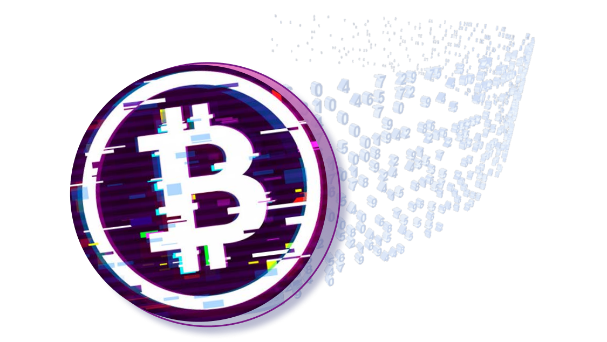

<ion-content [fullscreen]>
  <main class="login-container ion-padding">
    <ion-icon
      style="height: 2rem; width: 4rem"
      name="arrow-back-outline"
      (click)="backToOrigin()"
    ></ion-icon>

    <div class="img-logo">
      
    </div>
    <form standalone (ngSubmit)="recoveryAccount()">
      <h3>
        Não consegue lembrar sua senha? Informe seu email no campo abaixo para
        recupera-la!
      </h3>

      <ion-item color="transparent">
        <ion-icon slot="start" name="mail-outline"></ion-icon>
        <ion-label position="floating">Email</ion-label>
        <ion-input
          required
          [(ngModel)]="email"
          [ngModelOptions]="{standalone: true}"
          type="email"
        ></ion-input>
      </ion-item>

      <button ion-button class="ion-margin-top button-custom" type="submit">
        Recuperar conta
      </button>
    </form>
  </main>
</ion-content>
